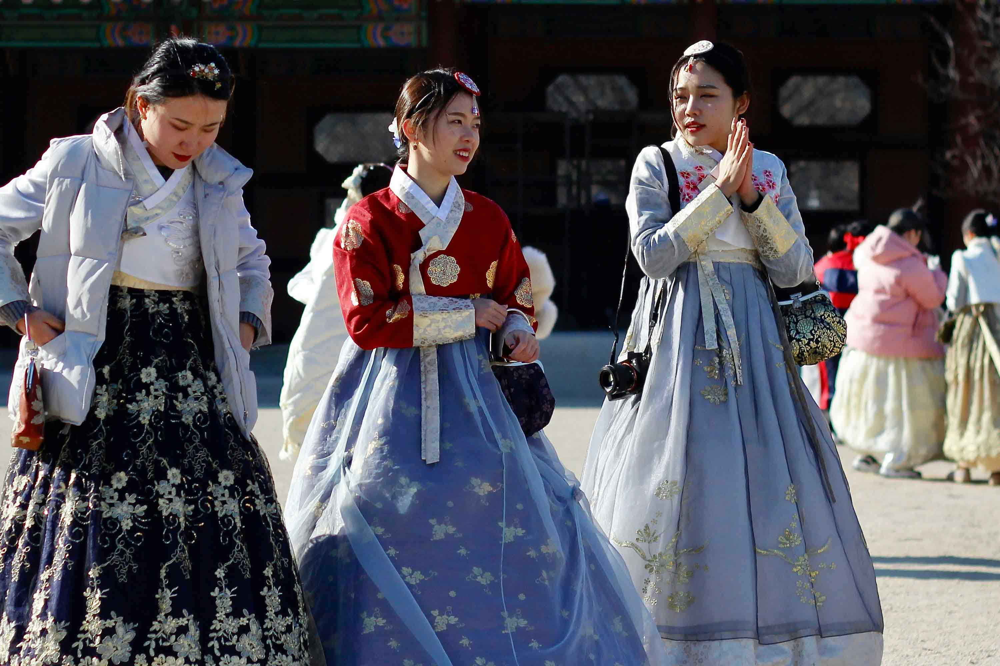

Han-Bok, Korean Traditional Attire
Han(Korean)-bok(clothes) refers to traditional Korean(Han) attire(Bok). Koreans in the past used cloth, silk, hemp, ramie, and other materials to make clothes tailored to the distinct four seasons of the Korean Peninsula. A complete set of hanbok consists of jeogori, which covers the arms and the torso, a skirt or a pair of trousers, and durumagi, which serves as outerwear. With a snug fit and soft lines, the clothes give an elegant look overall.
Korean people in the past tended to prefer simple, white clothes, for which they were often referred to as the “white-clad people.” However, they would wear more ostentatious clothes with elaborate colors and designs depending on the period, status, and occasion. The clothes mainly featured five colors: white, black, blue, red, and yellow, collectively called obangsaek. Today, hanbok is more often worn for special occasions than as casual clothes, such as wedding ceremonies, children's first birthdays, and seasonal holidays including the Lunar New Year's Day and Chuseok.
It's Modernized
Hanbok is evolving to be simple and practical, adapting to the modern era. Its designs are not only beautiful but also aimed at enhancing accessibility.
Hanbok is often characterized by vibrant colors and intricate embroidery, with different colors and designs representing the wearer's social status, age, and occasion. The attire is commonly worn during traditional celebrations, ceremonies, weddings, and important cultural events.
In recent times, there has been a movement to modernize hanbok, making it more versatile and accessible for contemporary wear. Modernized hanbok designs aim to blend traditional elements with a touch of modern fashion, catering to a wider audience and contributing to the preservation of Korean cultural heritage.